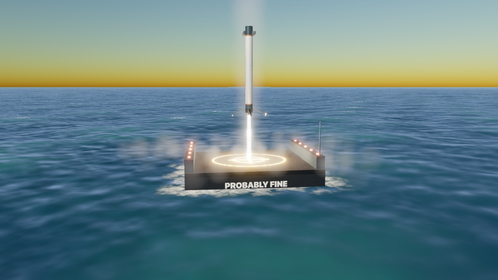
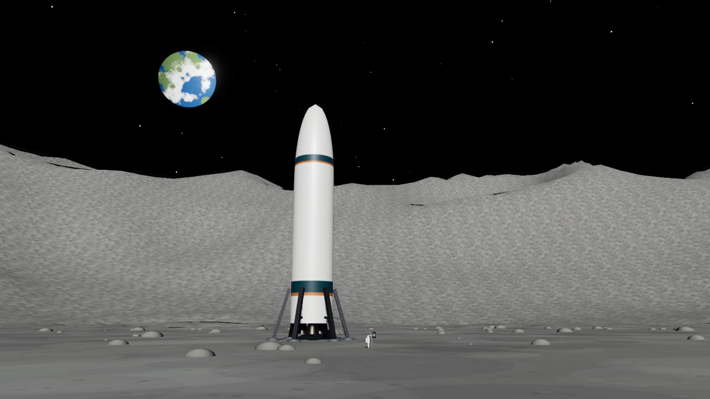
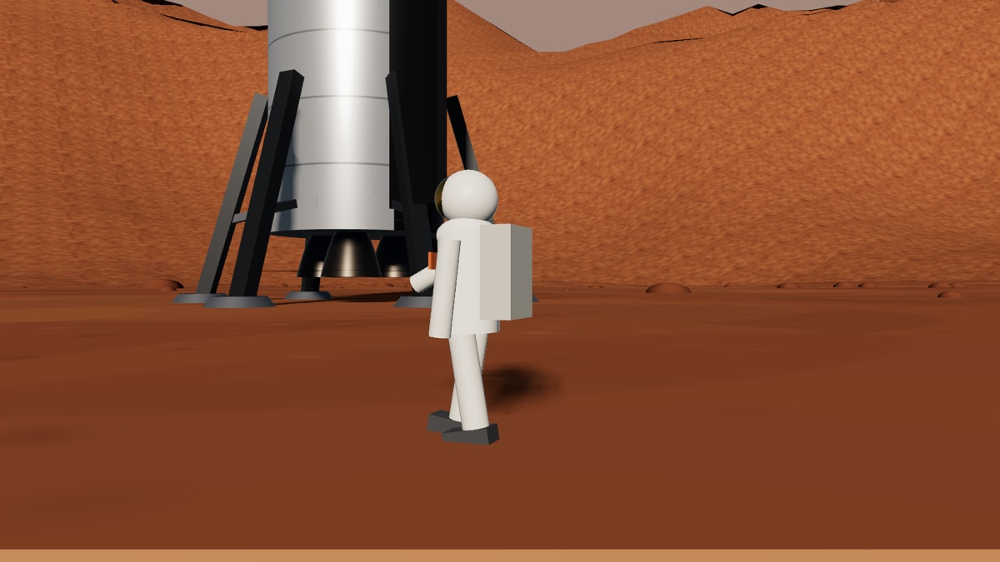

Boostback
Run a rocket company from an old fish cannery. Land boosters on a barge called Probably Fine, dock with a space station, and race the biggest launch company in the world to the Moon, then to Mars.



Run a rocket company from an old fish cannery. Land boosters on a barge called Probably Fine, dock with a space station, and race the biggest launch company in the world to the Moon, then to Mars.


